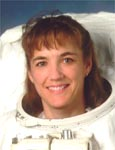

Lyndon B. Johnson Space Center
Houston, Texas 77058
|
National Aeronautics and Space Administration Lyndon B. Johnson Space Center Houston, Texas 77058 |
 |
Biographical Data |
||
Heidemarie M. Stefanyshyn-Piper (CAPTAIN, USN)
NASA Astronaut (FORMER)
PERSONAL DATA: Born February 7, 1963 in St. Paul, Minnesota. Married to Glenn A. Piper. They have one son. She enjoys scuba diving, swimming, running, roller blading, ice skating. As an undergraduate, she competed in intercollegiate athletics on MIT's crew team. Her mother, Adelheid Stefanyshyn, resides in St. Paul, Minnesota. Her father, Michael Stefanyshyn, is deceased. His parents, Glenn & Gerry Piper, reside in Clarkston, Washington.
EDUCATION: Graduated from Derham Hall High School, St. Paul, Minnesota, in 1980; received a bachelor of science degree in mechanical engineering from Massachusetts Institute of Technology in 1984, and a master of science degree in mechanical engineering from Massachusetts Institute of Technology in 1985.
ORGANIZATIONS: American Society of Mechanical Engineers.
SPECIAL HONORS: Received "VADM C.R. Bryan Award" Class 2-88B, Engineering Duty Officer Basic Course. Awarded Meritorious Service Medal, 2 Navy Commendation Medals, 2 Navy Achievement Medals, and other service medals. "Most Valuable Player Award" MIT Women's Crew in 1982, Women Diver’s Hall of Fame (2007).
EXPERIENCE: Stefanyshyn-Piper received her commission from the Navy ROTC Program at MIT in June 1985. She completed training at the Naval Diving and Salvage Training Center in Panama City, Florida as a Navy Basic Diving Officer and Salvage Officer. She completed several tours of duty as an Engineering Duty Officer in the area of ship maintenance and repair. She qualified as a Surface Warfare Officer onboard USS GRAPPLE (ARS 53). In September 1994, Stefanyshyn-Piper reported to the Naval Sea Systems Command as Underwater Ship Husbandry Operations Officer for the Supervisor of Salvage and Diving. In that capacity, she advised fleet diving activities in the repair of naval vessels while waterborne. Additionally she is a qualified and experienced salvage officer. Major salvage projects include: development of salvage plan for the Peruvian Navy salvage of the Peruvian submarine PACOCHA; and de-stranding of the tanker EXXON HOUSTON, off the coast of Barber's Point, on the island of Oahu, Hawaii.
NASA EXPERIENCE: Selected as an astronaut candidate by NASA in April 1996, Stefanyshyn-Piper reported to the Johnson Space Center in August 1996. Having completed two years of training and evaluation, she is qualified for flight assignment as a mission specialist. Initially assigned to astronaut support duties for launch and landing, she has also served as lead Astronaut Office Representative for Payloads and in the Astronaut Office EVA branch. A veteran of two space flights, STS-115 in 2006, and STS-126 in 2008, Stefanyshyn-Piper has logged over 27 days in space, and 33 hours and 42 minutes of EVA in 5 space walks. Captain Heide Stefanyshyn-Piper retired from NASA in July 2009 to return to the U.S. Navy at the Naval Sea Systems Command in Washington D.C.
SPACE FLIGHT EXPERIENCE: STS-115 Atlantis (September 9-21, 2006) successfully restarted assembly of the International Space Station. During the 12-day mission the crew delivered and installed the massive P3/P4 truss, and two sets of solar arrays that will eventually provide one quarter of the station’s power. The crew also performed unprecedented robotic work using the Shuttle’s arm. Stefanyshyn-Piper made 2 spacewalks (EVAs) that completed truss installation, enabled the solar arrays to be deployed and prepared an important radiator for later activation. She and Joe Tanner also replaced an S-Band Antenna, signal processor and transponder that transmits voice and data to the ground and retrieved an external science payload for return to earth.
STS-126 Endeavour (November 14-30, 2008) launched at night from the Kennedy Space Center, Florida, and returned to land at Edwards Air Force Base, California. It was NASA’s 4th shuttle flight in 2008 and the 27th Shuttle/Station assembly mission. Highlights of the almost 16-day mission included expanding the living quarters of the space station to eventually house 6 membercrews by delivering a new bathroom, kitchenette, two bedrooms, an exercise machine, and a water recycling system. The crew also completed 4 spacewalks to repair the damaged Starboard Solar Alpha Rotary Joint (SARJ), lubricate the Port SARJ, install an external camera group and a GPS Antenna on the Japanese Logistic Module. Stefanyshyn-Piper was the lead space walker and performed 3 of the spacewalks. STS-126 also delivered a new resident to the station, replacing Greg Chamitoff, Expedition 17-18 with Sandy Magnus, Expedition 18. STS-126 returned to Earth after completing 250 orbits in over 6.6 million miles.
JULY 2009